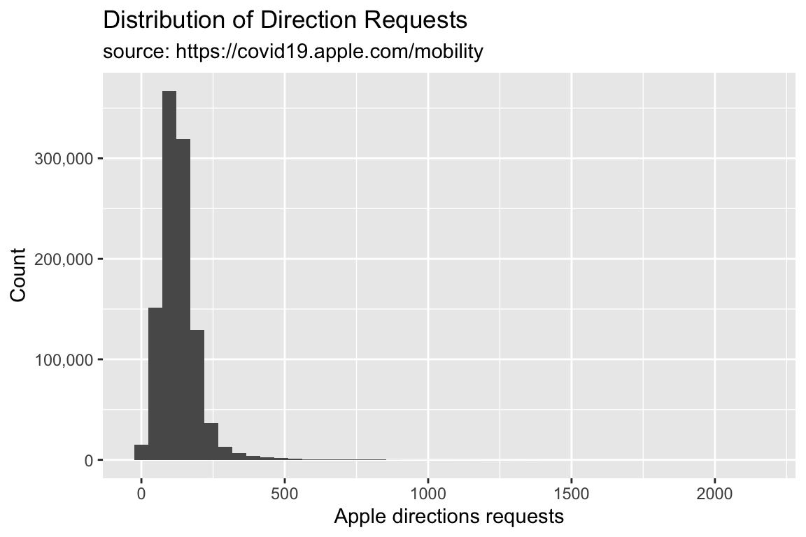
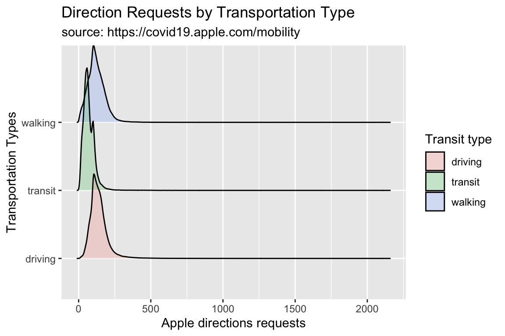
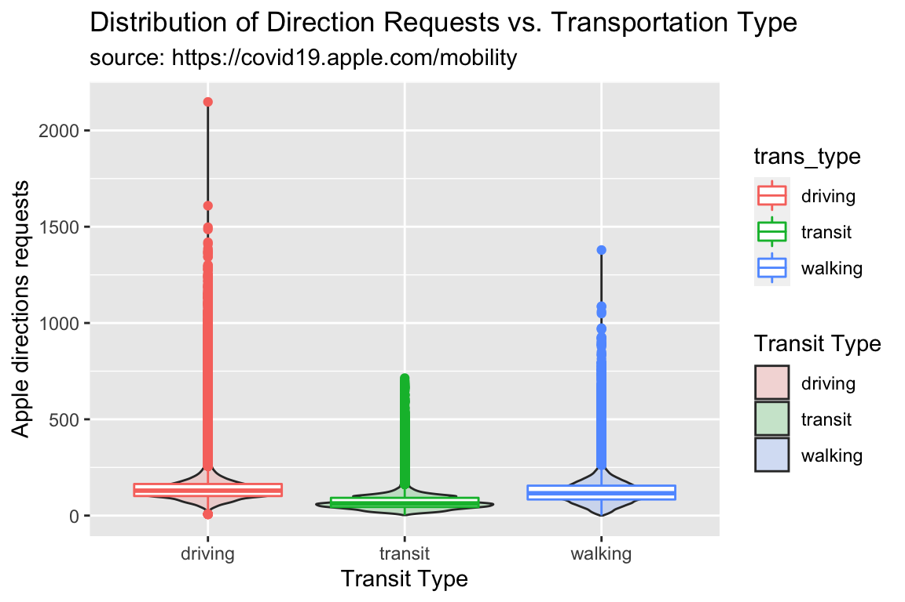

Data Visualization with ggplot2 (part 2)
1 Outline
- Import Apple Mobility Data
- Wrangle Apple Mobility Data
- Counting things
- Histograms
- Density plots
- Ridgeline plots
- Violin plots
2 Objectives
In order to use graphs and figures to effectively communicate with our audience, we need to consider a few things:
- Recognize the needs of your audience (who are they, and where are they coming from?)
- level of data literacy, subject matter expertise, etc.
- Communicate the quality of the data with stakeholders (can we answer their question(s) with the available data?)
- let them know the good and the bad news
- Identify the correct data visualization (based on the data and the problem/question)
- single variable, bivariate, and multivariate graphs
4 Previous lessons
All of the exercises and lessons are available here. Read more about ggplot2 on the tidyverse website, and in the Data Visualisation chapter of R for Data Science.
5 Load the packages
The main packages we’re going to use are dplyr, tidyr, and ggplot2. These are all part of the tidyverse, so we’ll import this package below:
install.packages("tidyverse")
library(tidyverse)6 Example: COVID and Mobility
Assume we received the following questions from a stakeholder:
How has COVID changed our modes of transportation?
Or
Are people using fewer or different forms of transportation since the COVID pandemic?
Questions we should be considering:
- What kind of measurements would this be?
- how people travel (walk, drive, etc.)
- What would these data look like?
- what would the columns and rows look like?
6.1 Data Import
We’re going to use the following data to answer the stakeholder’s questions:
- Apple mobility data: https://covid19.apple.com/mobility
Import the data below
AppleMobRaw <- readr::read_csv("https://bit.ly/36tTVpe")6.1.1 Tidy AppleMobRaw
These data need to be restructured into a tidy format.
AppleMobRaw %>%
tidyr::pivot_longer(cols = -c(geo_type:country),
names_to = "date",
values_to = "dir_request")6.1.2 Wrangle AppleMobRaw
We will remove the missing values from country and sub-region
AppleMobRaw %>%
tidyr::pivot_longer(cols = -c(geo_type:country),
names_to = "date", values_to = "dir_request") %>%
# remove missing country and missing sub-region data
dplyr::filter(!is.na(country) & !is.na(`sub-region`))Use mutate() to create a properly formatted date variable, and rename() the transportation_type variable to trans_type. Apply janitor::clean_names() to the entire dataset and assign the final output to TidyApple.
AppleMobRaw %>%
tidyr::pivot_longer(cols = -c(geo_type:country),
names_to = "date", values_to = "dir_request") %>%
# remove missing country and missing sub-region data
dplyr::filter(!is.na(country) & !is.na(`sub-region`)) %>%
# format date
mutate(date = lubridate::ymd(date)) %>%
# change name of transportation types
rename(trans_type = transportation_type) %>%
# clean names
janitor::clean_names() -> TidyApple6.2 Counting
One of the most important jobs of analytic work is counting things. There are many ways to accomplish this in R, but we’ll stick with the dplyr package because it’s part of the tidyverse.
The dplyr function for counting responses of a categorical or factor variable is count(), and it works like this:
Data %>%
count(variable)6.2.1 Count
So, if we wanted to count the number of different transportation types in the TidyApple data frame, it would look like this,
TidyApple %>%
dplyr::count(trans_type)6.2.2 Count & sort
We can also sort the responses using the sort = TRUE argument.
TidyApple %>%
dplyr::count(trans_type, sort = TRUE)6.2.3 Iterate with count
We can also combine dplyr::select_if() and purrr::map() to pass the count() function to all the character variables in TidyApple.
TidyApple %>%
select_if(is.character) %>%
map(~count(data.frame(x = .x), x, sort = TRUE)) -> tidy_apple_countsWe can example the counts of each value by using the $ to subset the tidy_apple_counts list.
tidy_apple_counts$sub_regiontidy_apple_counts$region7 Visualizing Distributions
Before we start looking at relationships between variables, we should examine each variable’s underlying distribution. In the next section, we’re going to cover a few graphs that display variable distributions: histograms, density, violin, and ridgeline plots,
7.1 Histograms
A histogram is a special kind of bar graph–it only takes a single continuous variable (in this case, dir_request), and it displays a relative breakdown of the values.
The x axis for the histogram will have the direction requests, and the y variable will display a count of the values.
lab_hist <- labs(x = "Apple directions requests",
y = "Count",
title = "Distribution of Direction Requests",
subtitle = "source: https://covid19.apple.com/mobility")7.1.1 exercise
Create a histogram of direction requests using dir_request
TidyApple %>% ggplot() +
geom_histogram(aes(x = ____________)) +
lab_hist7.1.2 solution
See blow:
TidyApple %>% ggplot() +
geom_histogram(aes(x = dir_request)) +
lab_hist
7.2 Adjusting Y Axes
We can see the y axis of the histogram is in scientific notation. This might be hard for some audiences to interpret, so we will change this to use the whole number with commas with the scales package.
7.2.1 exercise
Add the scales::comma value to the scale_y_continuous() function.
library(scales)
TidyApple %>% ggplot() +
geom_histogram(aes(x = dir_request)) +
scale_y_continuous(labels = __________) +
lab_hist7.2.2 solution
See below:
library(scales)
TidyApple %>% ggplot() +
geom_histogram(aes(x = dir_request)) +
scale_y_continuous(labels = scales::comma) +
lab_hist
7.3 Histogram Shape
We can control the shape of the histogram with the bins argument. The default is 30.
7.3.1 exercie
Set bins to 15.
TidyApple %>% ggplot() +
geom_histogram(aes(x = dir_request), bins = __) +
scale_y_continuous(labels = scales::comma) +
lab_hist7.3.2 solution
See below:
TidyApple %>% ggplot() +
geom_histogram(aes(x = dir_request), bins = 15) +
scale_y_continuous(labels = scales::comma) +
lab_hist
7.3.3 exercise
Set bins to 45 and assign it to gg_hist45.
TidyApple %>% ggplot() +
geom_histogram(aes(x = dir_request), bins = __) +
scale_y_continuous(labels = scales::comma) +
lab_hist -> _____________7.3.4 solution
See below:
TidyApple %>% ggplot() +
geom_histogram(aes(x = dir_request), bins = 45) +
scale_y_continuous(labels = scales::comma) +
lab_hist -> gg_hist45
7.4 Density Plots
What if we want to see how a continuous variable is distributed across a categorical variable? We did this in the previous lesson with a boxplot.
Density plots come in handy here (so do geom_boxplot()s!). Read more about the density geom here.
We are going to create the graph labels so we know what to expect when we build our graph.
We want to see the distribution of the directions request, filled by the levels of transportation type.
lab_density <- labs(x = "Apple directions requests",
fill = "Transit Type",
title = "Distribution of Direction Requests vs. Transportation Type",
subtitle = "source: https://covid19.apple.com/mobility")Now we build the density plot, passing the variables so they match our labels above.
7.4.1 exercise
Create a density plot of direction requests colored by the type of transportation.
TidyApple %>%
ggplot() +
geom_density(aes(x = __________, fill = __________)) +
lab_density7.4.2 solution
See below:
TidyApple %>%
ggplot() +
geom_density(aes(x = dir_request, fill = trans_type)) +
lab_density
One drawback to density plots is the y axis can be hard to interpret
7.4.3 exercise
Adjust the overlapping densities by setting alpha to 1/3. Assign this plot to gg_density.
TidyApple %>%
ggplot() +
geom_density(aes(x = dir_request, fill = trans_type),
alpha = __________) +
lab_density -> __________7.4.4 solution
See below:
TidyApple %>%
ggplot() +
geom_density(aes(x = dir_request, fill = trans_type),
alpha = 1/3) +
lab_density -> gg_density
gg_density
7.5 Ridgeline Plots
Another option is a ridgeline plot (from the ggridges package). These display multiple densities.
lab_ridges <- labs(
title = "Direction Requests by Transportation Type",
subtitle = "source: https://covid19.apple.com/mobility",
fill = "Transit type",
x = "Apple directions requests",
y = "Transportation Types")library(ggridges)
TidyApple %>%
ggplot() +
geom_density_ridges(aes(x = dir_request,
y = trans_type,
fill = trans_type),
alpha = 1/5) +
lab_ridges
7.6 Violin Plots
Another alternative to the density plot is the violin plot.
7.6.1 exercise
- assign
"Apple directions requests"to thexaxis - assign
"Transit Type"to theyaxis
lab_violin <- labs(x = _________________________,
y = _________________________,
fill = "Transit Type",
title = "Distribution of Direction Requests vs. Transportation Type",
subtitle = "source: https://covid19.apple.com/mobility")7.6.2 solution
lab_violin <- labs(x = "Transit Type",
y = "Apple directions requests",
fill = "Transit Type",
title = "Distribution of Direction Requests vs. Transportation Type",
subtitle = "source: https://covid19.apple.com/mobility")7.6.3 exercise
Add a geom_violin() to the code below:
TidyApple %>%
ggplot() +
____________(aes(y = dir_request, x = trans_type,
fill = trans_type)) +
lab_violin7.6.4 solution
TidyApple %>%
ggplot() +
geom_violin(aes(y = dir_request, x = trans_type,
fill = trans_type)) +
lab_violin
7.6.5 exercise
The great thing about ggplot2s layered syntax, is that we can add geoms with similar aesthetics to the same graph! For example, we can see how geom_violins and geom_boxplots are related by adding a geom_boxplot() layer to the graph above.
TidyApple %>%
ggplot() +
geom_violin(aes(y = dir_request, x = trans_type,
fill = trans_type), alpha = 1/5) +
___________(aes(y = dir_request, x = trans_type,
color = trans_type)) +
lab_violin7.6.6 solution
Note we set the alpha to 1/5 for the geom_violin(), and the color to trans_type for the geom_boxplot().
TidyApple %>%
ggplot() +
geom_violin(aes(y = dir_request, x = trans_type,
fill = trans_type), alpha = 1/5) +
geom_boxplot(aes(y = dir_request, x = trans_type,
color = trans_type)) +
lab_violin
7.7 Export the data
You’ll want to export the TidyApple dataset for the next set of exercise.
The code chunk below exports the dataset as a .csv with a date-stamp.
readr::write_csv(x = TidyApple,
file =
paste0("data/",
base::noquote(lubridate::today()),
"-TidyApple.csv"))